Sound Gym

Dominio total
0 / 42 ★
Level 1
Ear Basics
Entrenamiento rápido para aprender a reconocer cambios grandes antes de entrar a frecuencias y parámetros específicos.
0 / 18 ★
Level 2
Engineer Basics
Aquí comienza el oído de ingeniería: regiones de frecuencia y comportamiento básico de la compresión.
0 / 6 ★
Level 3
Studio
Los seis juegos principales para entrenamiento de producción, mezcla y mastering.
0 / 18 ★